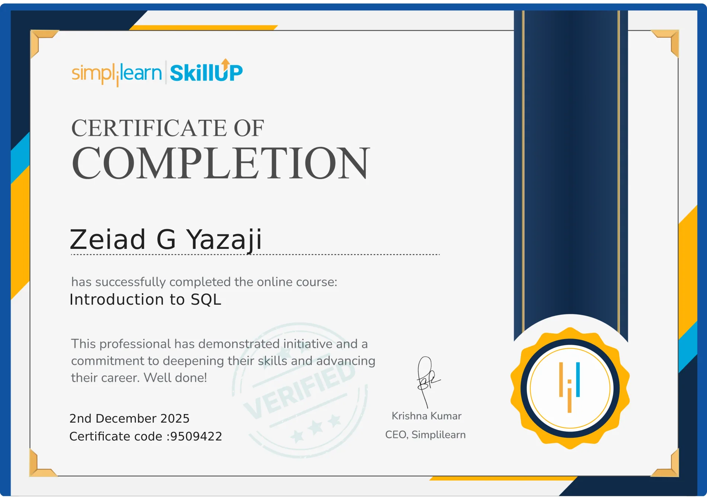

Relational design
A Oracle engagement calls for deliberate design, careful validation, security-conscious delivery and clear operational handover. This capability supports the wider engineering and enterprise technology practice.
Database and enterprise information systems supporting dependable business operations.
Database and enterprise information systems supporting dependable business operations. Each initiative benefits from explicit requirements, sound implementation choices, testing, documentation and transparent review.
A Oracle engagement calls for deliberate design, careful validation, security-conscious delivery and clear operational handover. This capability supports the wider engineering and enterprise technology practice.
A Oracle engagement calls for deliberate design, careful validation, security-conscious delivery and clear operational handover. This capability supports the wider engineering and enterprise technology practice.
A Oracle engagement calls for deliberate design, careful validation, security-conscious delivery and clear operational handover. This capability supports the wider engineering and enterprise technology practice.
Led IT, cybersecurity, ERP, databases and infrastructure initiatives; coordinated teams and oversaw data-center deployments involving servers, UPS and surveillance.
Managed multi-branch IT systems and Cosmos / Transtek ERP workflows; supported analysis, application programming, documentation, user training and rollout.
The work references above summarize engagements described in the professional résumé. They indicate related experience, but do not imply each listed tool was used in every project. Client names and sensitive technical details are intentionally limited.

Credentials are shown in their actual categories: professional certification, issuer-issued digital credential or course/program completion. A related course is not proof of a vendor professional certification for this specific technology. Issuer records determine validity and standing.
Technical references should be interpreted against the real scope of work; the portfolio avoids confidential designs, unsupported performance metrics or invented client testimonials.